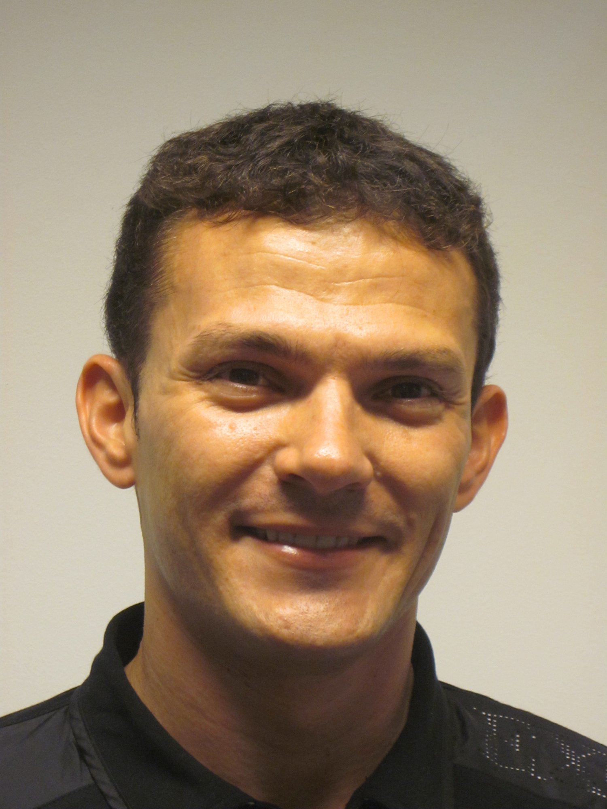

|  |
Jose M. Alvarez I lead the autonomous vechicle perception research group at Nvidia, CA, USA. The group focuses on scaling up deep learning for AV, spaning efficient and data-centric deep learning, 3D computer vision, and Self-Supervised Learning. |
We are hiring!: (senior) Research Engineers, and Software Engineer and Research interns
News
- April 2022: Our paper on Robustness in Transformers has been accepted at ICML 2022
- March 2022: 7 new papers accepted at CVPR 2022
- Dec 2021: Presenting 2 papers at NeurIPS 2021:
- Segformer: Simple and efficient design for semantic segmentation with transformers
- Distilling Image Classifiers in Object Detectors
- October 2021: Presenting our active learning paper at ICCV 2021
- Active learning for deep object detection via probabilistic modeling
- 1 new paper accepted at ICML 2021
- 2 new papers accepted at ICLR 2021
- 1 new paper accepted at ICCV 2021
- 3 new papers accepted at CVPR 2021
- 1 new paper accepted at WACV 2021
- 1 new paper accepted at IEEE-IV 2021
- 2 new papers accepted at IEEE CVPR 2020
- 1 new paper accepted at IEEE-IV 2020
- 1 new paper accepted at NeurIPS 2020
- 1 new paper accepted at WACV 2020
- 1 new paper accepted at ICLR 2020
Interns (2021)
- Jiayu Yang – PhD, Australian National University
- Marc Finzi – PhD, NYU
- Enze Xie – PhD, HKU
- Ryan Humble – PhD, Stanford
- Vlad Sobal – PhD, NYU
- Jianna Liu – BS, MIT
- Xinlong Wang – PhD, Univ. Adelaide
- Daquan Zhou – PhD, NUS
- Faith Johnson – PhD, Rutgers
- Javier Sagastuy Brena – PhD, Stanford
- Joshua Chen – MS, CMU (now Nvidia)
- Nithya Attaluri – BS, MIT
- Jessica Lee – MS, CMU
Interns (2020)
- Jiwoong Choi PhD, Seoul Nat. University (now NVIDIA)
- Ismail Elezi PhD TUM (now PostDoc TUM)
- Shuxuan Guo - PhD. EPFL
- Marvin Kim – MS CMU (now Waymo)
- Lilian Luong – BS MIT
- Cynthia Liu – MS, MIT (now Cerebras)
- Nadine Chang – PhD CMU
- Yerlan Idelbayav – PhD UC Merced (now Amazon)
- Xinnan Du – MS CMU (now Goldman Sachs)
- Hoang Vu Nguyen – PhD Stony Brooks Univ.
Interns (2019)
- Maying Shen – MS CMU (now Nvidia)
- Michael Zhang – BS Hardvard (now PhD Stanford)
- Akshay Chawla – MS CMU (now Vicarious)
- Kashyap Chitta – MS CMU (now PhD student MPI)
- Tony Wang – BS MIT
- Wenbo Guo – PhD Penn. State Univ.
- Nikhil Murthy – BS MIT
Interns (2018)
- Jiaming Zeng – PhD Stanford (now IBM Research)
- Yousef Hindy – MS Stanford (now NewCo)
- Kashyap Chitta – MS CMU (now PhD student MPI)